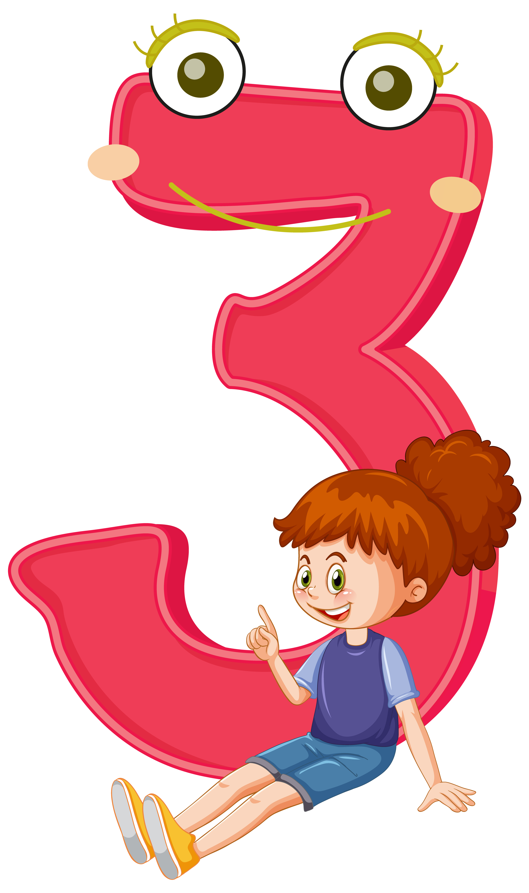
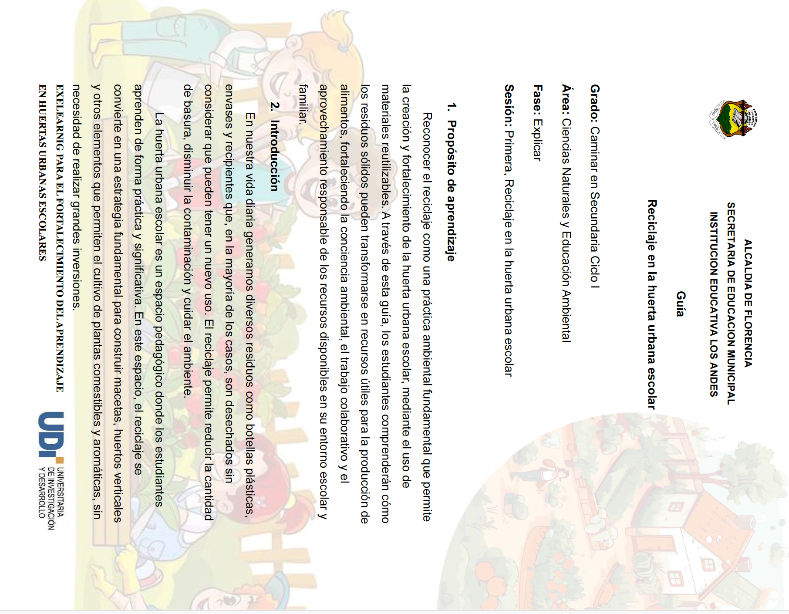
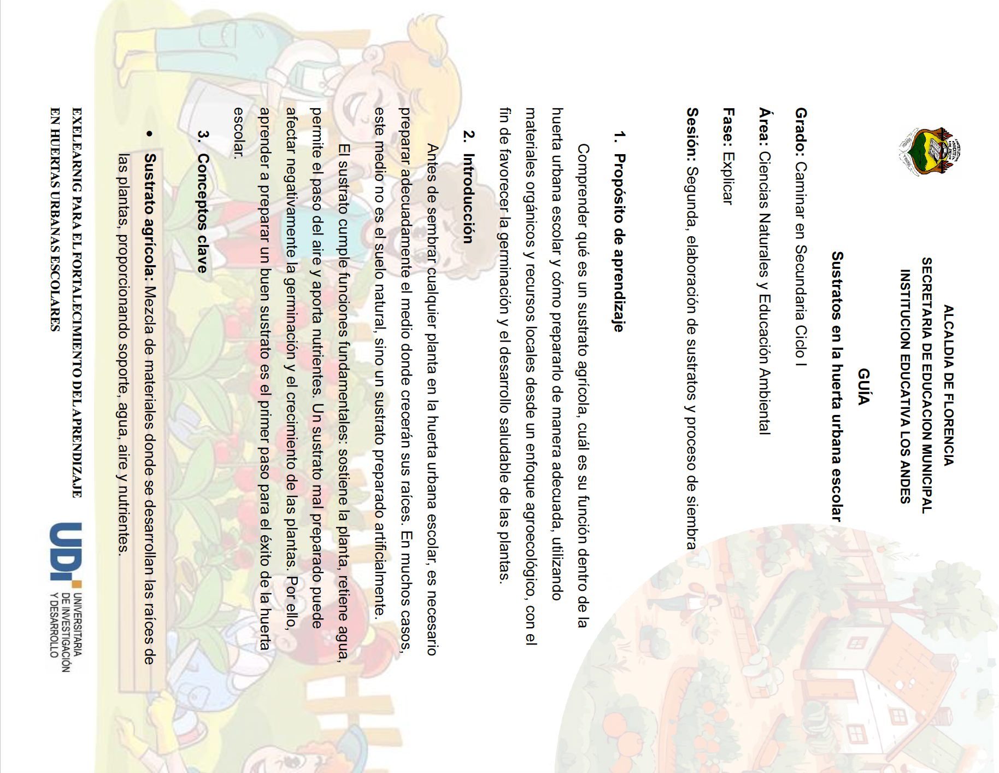
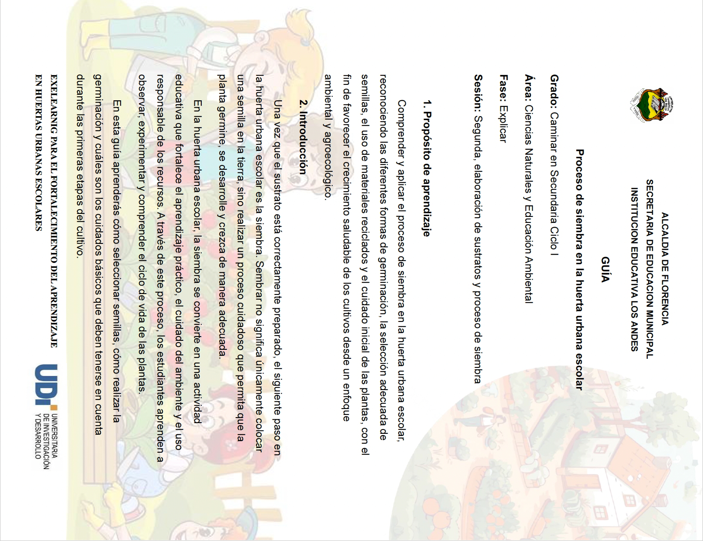
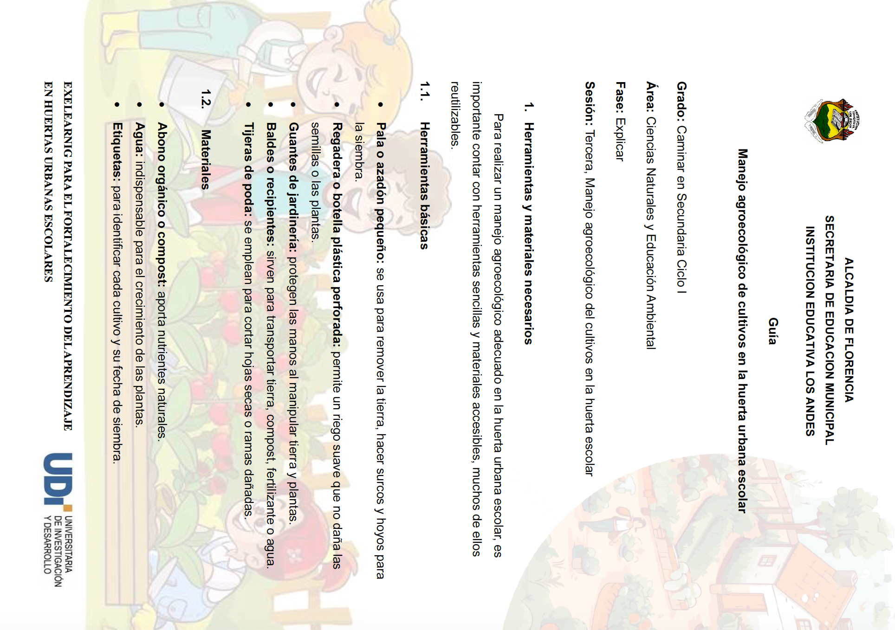
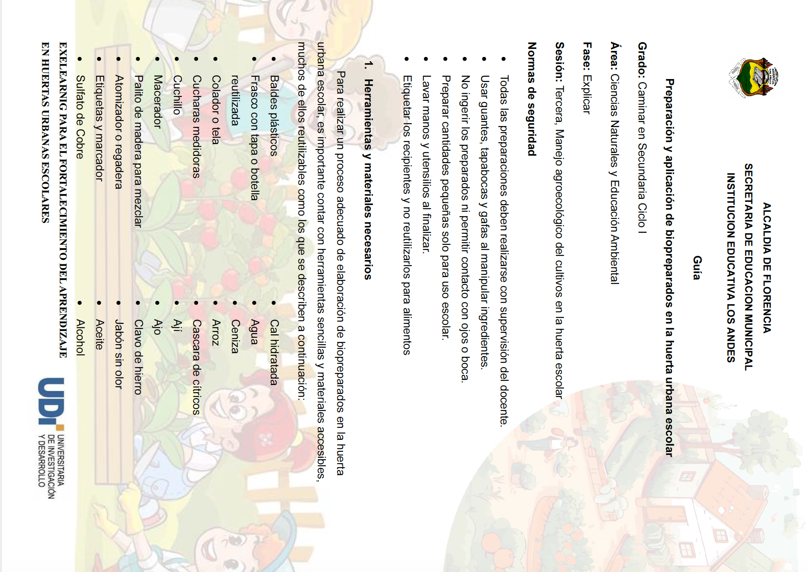
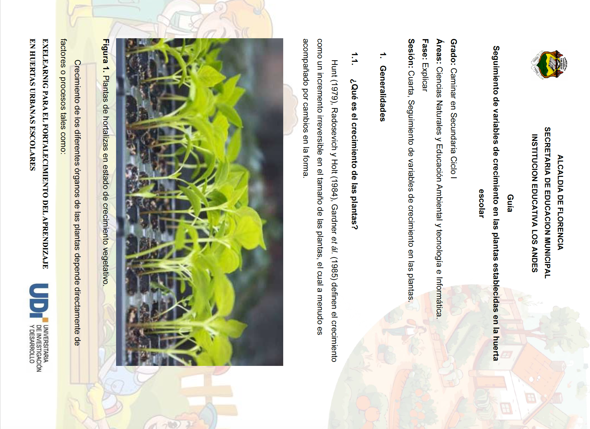

Actividad para explicar
1. Descripción de la actividad
Actividad orientada a explicar conceptos clave y resolver dudas mediante recursos digitales (videos tutoriales, guías digitales y juegos interactivos) y una jornada presencial de acompañamiento en la huerta escolar.

2. Tiempo de ejecución de la actividad
La actividad de aprendizaje se desarrollará a través de cinco sesiones con una duración total de 480 minutos (8 horas), divididas de la siguiente manera, cuatro (4) sesiones de 110 minutos cada una y una sesión final de 40 minutos.

3. Desarrollo de la actividad - Instruciones generales
1. INSTRUCIONES
Para el desarrollo de la presente actividad, se dividirá en cuatro (4) sesiones con una duración de 110 minutos cada una, de esta manera los estudiantes deben observar los videos tutoriales que se incluyen en cada sesión para tratar los temas de reciclaje, conciencia ambiental, sustratos, proceso de siembra, manejo agroecológico, biopreparados, seguimiento de variables de crecimiento y uso pedagógico de las TIC en la huerta escolar.
Seguidamente deben interactuar con la guía digital para entender procesos paso a paso que se desarrollan en la huerta escolar y por ultimo, se deberán explorar el juego interactivo como actividad de retroalimentación del contenido desarrollado en cada sesión.
2. HERRAMIENTAS DIGITALES
2.1. VIDEOS TUTORIALES
Los videos tutoriales son herramientas digitales que se alojan en la plataforma digital Youtube, los cuales les permiten a los estudiantes conocer las tematicas relacionadas a la huerta escolar.
2.2. GUIAS DIGITALES
Las guías digitales son herramientas digitales que se alojan en la plataforma Google Drive, las cuales permite a los estudiantes tener la disponibilidad de revisar el paso a paso y los principales consejos a la hora de realizar los procesos que se incluyen en la huerta urbana escolar.
2.3. JUEGOS INTERACTIVOS
Los juegos interactivos son herramientas digitales que se alojan en la plataforma Genially, los cuales fomenta la exploración de los procesos que se desarrollan en la huerta urbana escolar.
3. Desarrollo de la actividad - Sesión 1
3. DESARROLLO
3.1. Primera sesión
Reciclaje en la huerta urbana escolar
Duración: 110 minutos
3.1.1. Videos tutoriales
3.1.1.1. Reciclaje en la huerta urbana escolar
Instrucciones: se incluyen los siguientes videos para entender la importancia y practicicidad de los materiales reciclables como las botellas pet para los procesos de elaboración de macetas en las huertas urbanas, por lo cual, los participantes deben observar cada unos de los videos:
3.1.1.1.1. ¡Crea tu propia huerta en casa con materiales reciclados ♻️!
3.1.1.1.2. HUERTOS VERTICALES CON MATERIALES RECICLADOS / VERTICAL GARDEN
3.1.1.1.3. INCREIBLE HUERTO URBANO CON MATERIALES RECICLADOS - Cultivo de Tomate, Pepino, Morron y Aromáticas!
3.1.1.2. Conciencia ambiental en el huerto urbana escolar
Instrucciones: se incluyen los siguientes videos para entender la importancia de los procesos que fortalecen la conciencia ambiental de los estudiantes que participan en la huerta urbana escolar, espacio dedicada al aprovechamiento de recursos disponibles, enseñanza de las ciencias naturales y ambientales y a su vez, la producción de alimentos saludables, por lo cual, los participantes deben observar cada unos de los videos:
3.1.1.2.1. Huertos agroecológicos escolares
3.1.1.2.2. Sembrando Vida, Huerta Escolar para el Cuidado Ambiental y la Seguridad Alimentaria
3.1.1.2.3. Ecohuerto: Proyecto de Educación Ambiental sobre Huertos Escolares Ecológicos
3.1.2. Guia digital
3.1.2.1. Elaboración de macetas con material reciclado
Instrucciones: ingresa al link que se incluye debajo de la imagen de la guía para visualizarla y comprender mejor los procesos desarrollados en la presente sesión.

Dar click en el siguiente enlace de acceso para descargar la guía digital:
https://drive.google.com/file/d/1F_XpM84esf0V0s-0is1WOuHz7gaki23J/view?usp=sharing
3.1.3. Juego interactivo
3.1.3.1. Quiz Marcianitos, proceso de reciclaje en la huerta urbana escolar
Instrucciones: completa el reto del Quiz interactivo de Marcianitos un proceso de reciclaje en la huerta urbana escolar, el cual es una actividad de retroalimentación para afianzar los conocimientos adquiridos en la primera sesión.
!Diviértete, explora y aprende!
3. Desarrollo de la actividad - Sesión 2
3.2. Segunda sesión
Sustratos y procesos de siembra
Duración: 110 minutos
3.2.1. Videos tutoriales
3.2.1.1. Sustratos
Instrucciones: se incluyen los siguientes videos para entender cual es la importancia del sustrato en la huerta urbana escolar, junto a los procesos y cantidades necesarias para su adecuada preparación con elementos disponibles en la región, por lo cual, los participantes deben observar cada unos de los videos:
3.2.1.1.1. CÓMO PREPARAR SUSTRATO PARA HORTALIZAS
3.2.1.1.2. 5 MEZCLAS de SUSTRATOS para tu huerto 🍎 (Hortalizas y Germinación)🌱
3.2.1.2. Proceso de siembra en la huerta urbana escolar
Instrucciones: se incluyen los siguientes videos para entender cual es la importancia del proceso de siembra en la huerta urbana, así como los diferentes tipo de siembra; por semilla (sexual) y por partes vegetales reproductivas (asexual), junto a los pasos y recomendaciones generales para realizarlo correctamente el proceso, por lo cual, los participantes deben observar cada unos de los videos:
3.2.1.2.1. COMO SEMBRAR ESPINACAS EN TU HUERTA - ACLAREO Y REPICADO MUY FACIL!
3.2.1.2.2. GERMINA TODOS TUS VEGETALES SIN SEMILLA RAPIDO! - Huerta casera en agua
3.2.2. Guias digitales
3.2.2.1. Preparación de sustratos
Instrucciones: ingresa al link que se incluye debajo de la imagen de la guía para visualizarla y comprender mejor los procesos desarrollados en la presente sesión.

Dar click en el siguiente enlace de acceso para descargar la guía digital:
https://drive.google.com/file/d/1difMRoAVpMVVkXMUVSyQZ_zIP-5Xu3G-/view?usp=sharing
3.2.2.2. Proceso de siembra
Instrucciones: ingresa al link que se incluye debajo de la imagen de la guía para visualizarla y comprender mejor los procesos desarrollados en la presente sesión.

Dar click en el siguiente enlace de acceso para descargar la guía digital:
https://drive.google.com/file/d/10lE_tieAamIPjRLsdJJkuId_BnMUk_GH/view?usp=sharing
3.2.3. Juego interactivo
3.2.3.1. Caída genial, un reto para el proceso preparación de sustratos y siembra
Instrucciones: ompleta el Quiz interactivo de Caída Genial un reto para el proceso preparación de sustratos y siembra en la huerta urbana escolar, el cual es una actividad de retroalimentación para afianzar los conocimientos adquiridos en la segunda sesión.
!Diviértete, explora y aprende!
3. Desarrollo de la actividad - Sesión 3
3.3. Tercera Sesión
Manejo agroecologico del cultivos en la huerta escolar
Duración: 110 minutos
3.3.1. Videos tutoriales
3.3.1.1. Manejo agroecológico de cultivos en la huerta urbana escolar
Instrucciones: se incluyen los siguientes videos para entender cual es la importancia del proceso de manejo agroecológico en la huerta urbana escolar, por medio de tips y recomendaciones generales en los temas de eliminación de plantas competidoras, mantenimiento de macetas, riego de las plantas, control de plagas y enfermedades, fertilización y cosecha de productos, por lo cual, los participantes deben observar cada unos de los videos:
3.3.1.1.1. Huerto para Principiantes: 10 Consejos más importantes para COMENZAR desde cero
3.3.1.1.2. Agroecología y agricultura orgánica
3.3.1.1.3. CUIDADOS BÁSICOS del Huerto en CASA
3.3.1.1.4. 7 CLAVES Del ÉXITO para CULTIVAR TOMATES 🍅 en MACETA
3.3.1.2. Biopreparados
Instrucciones: se incluyen los siguientes videos para entender cual es la importancia de los biopreparados en la huerta urbana escolar, por medio de la descripción, elementos necesarios, procesos, tips y recomendaciones generales para la fertilización y el control de plagas y enfermedades en los cultivos establecidos en la huerta, por lo cual, los participantes deben observar cada unos de los videos:
3.3.1.2.1. BIOPREPARADOS para fertilización, control de PLAGAS y ENFERMEDADES
3.3.1.2.2. BIOFERTILIZANTES Y OTROS BIO-PREPARADOS
3.3.2. Guias digitales
3.3.2.1. Manejo agroecológico del cultivo
Instrucciones: ingresa al link que se incluye debajo de la imagen de la guía para visualizarla y comprender mejor los procesos desarrollados en la presente sesión.

Dar click en el siguiente enlace de acceso para descargar la guía digital:
https://drive.google.com/file/d/1PPmVO4jx8O6OFPzJ8KMxYdhmMZiDzMcB/view?usp=sharing
3.3.2.2. Preparación y aplicación de biopreparados
Instrucciones: ingresa al link que se incluye debajo de la imagen de la guía para visualizarla y comprender mejor los procesos desarrollados en la presente sesión.

Dar click en el siguiente enlace de acceso para descargar la guía digital:
https://drive.google.com/file/d/18dHAZT3Y1i75_pIwGr5MWQsYIGXeUzan/view?usp=sharing
3.3.3. Juego interactivo
3.3.3.1. Piñata Challenge, un reto para aprender sobre manejo agroecologico del cultivo y elaboración de biopreparados
Instrucciones: completa el Quiz interactivo de Piñata Challenge, un reto para aprender sobre manejo agroecologico del cultivo y elaboración de biopreparados en la huerta urbana escolar, el cual es una actividad de retroalimentación para afianzar los conocimientos adquiridos en la tercera sesión.
!Diviértete, explora y aprende!
3. Desarrollo de la actividad - Sesión 4
3.4. Cuarta sesión
Seguimiento de variables de crecimiento en las plantas
Duración: 110 minutos
3.4.1. Videos tutoriales
3.4.1.1. Seguimiento de variables de crecimiento
Instrucciones: se incluyen los siguientes videos para entender cual es la importancia del seguimiento de variables de crecimiento de plantas en la huerta urbana escolar, por medio de la descripción del ciclo vida de las plantas, unidades de medida, instrumentos de medida y el uso de estadistica descriptiva, para interpretrar y analizar el crecimiento de las plantas, por lo cual, los participantes deben observar cada unos de los videos:
3.4.1.1.1. Ciclo de vida de las plantas.
3.4.1.1.2. La Germinación | ¿Cómo Crece Una Planta? | Videos Educativos Para Niños
3.4.1.1.3. UNIDADES DE MEDIDA Super fácil - Para principiantes
3.4.1.1.4. INSTRUMENTOS de MEDIDA
3.4.1.1.5. Medidas de tendencia central
3.4.1.2. Uso pedagógico de las TIC en la huerta escolar
Instrucciones: se incluyen los siguientes videos para entender cual es la importancia del uso pedagógico de las TIC en la huerta escolar a través del seguimiento de variables de crecimiento de las plantas, donde se usan plataformas digitales para la recolección de información y el uso de las medidas de tendencia central de la estadística descriptiva, como mecanismos para interpretrar y analizar el crecimiento de las plantas, por lo cual, los participantes deben observar cada unos de los videos:
3.4.1.2.1. Nociones básicas de Microsoft Excel
3.4.1.2.2. Medidas de tendencia central en Microsoft Excel
3.4.1.2.3. Crear GRÁFICOS estadísticos. Introducir datos en Excel y crear gráficas
3.4.2. Guias digitales
3.4.2.1. Seguimiento de variables de crecimiento en las plantas establecidas
Instrucciones: ingresa al link que se incluye debajo de la imagen de la guía para visualizarla y comprender mejor los procesos desarrollados en la presente sesión.

Dar click en el siguiente enlace de acceso para descargar la guía digital:
https://drive.google.com/file/d/1UbcZkJIPYnk1tfe8e_YML2JO9VoUegpt/view?usp=sharing
3.4.3. Juego interactivo
3.4.3.1. El Ahorcado interactivo, un reto para comprender los procesos de seguimiento de variables de crecimiento de plantas en la huerta urbana escolar
Instrucciones: Completa el Quiz interactivo de Piñata Challenge, un reto para comprender los procesos de seguimiento de variables de crecimiento de plantas en la huerta urbana escolar, la cual es una actividad de retroalimentación para afianzar los conocimientos adquiridos en la cuarta sesión.
!Diviértete, explora y aprende!
4. Actividad de aprendizaje
1. INSTRUCIONES
Para finalizar la sesión los estudiantes deben desarrollar la siguiente actividad de evaluación formativa, la cual consiste en completar una prueba dinámica tipo crucigrama en la plataforma Educaplay con 12 enunciados relacionados al tema de procesos desarrollados en la huerta urbana escolar (desarrollados en las 4 sesiones anteriores), para ello, deben completar el crucigrama, teniendo en cuenta el enunciado que incluye en cada pregunta. Al finalizar se contará con la retroalimentación inmediata para conocer el nivel de acierto de cada estudiante.
2. DESARROLLO
Duración: 40 minutos
2.1. EVALUACIÓN FORMATIVA